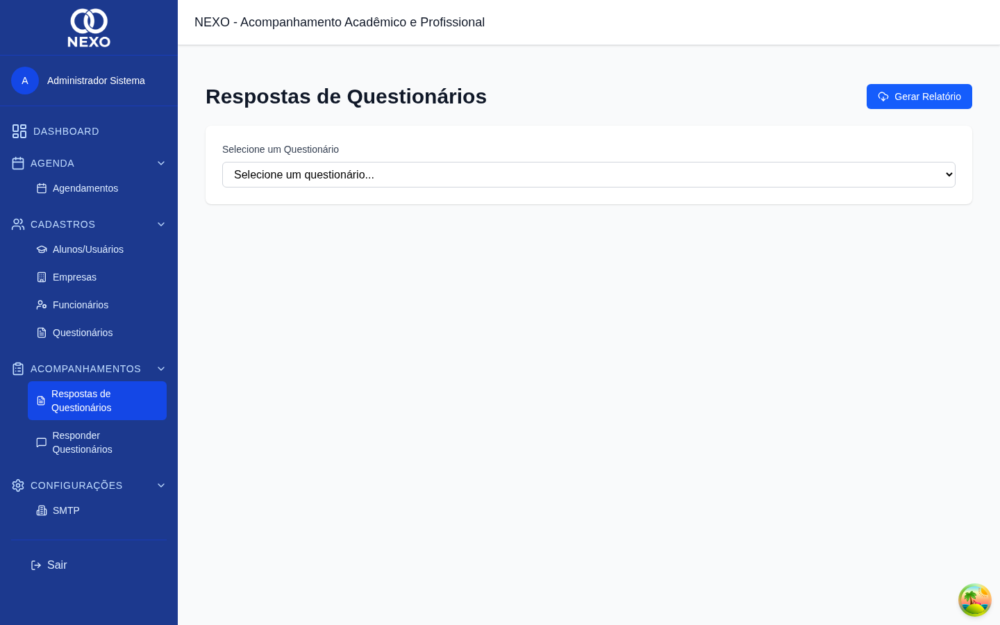
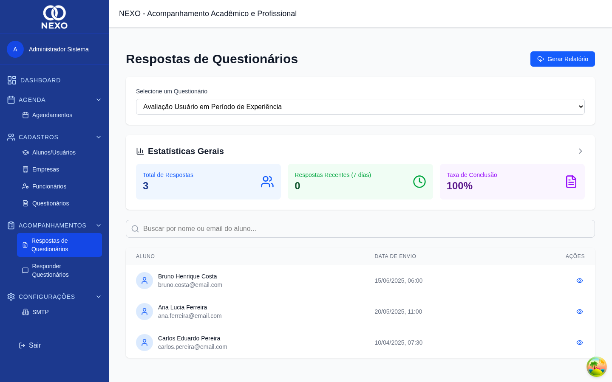
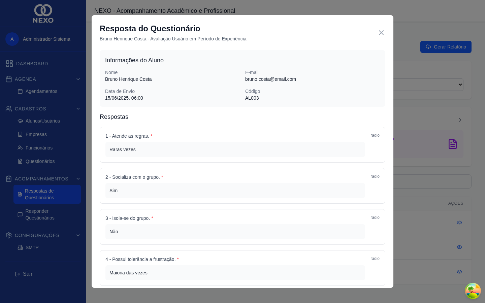
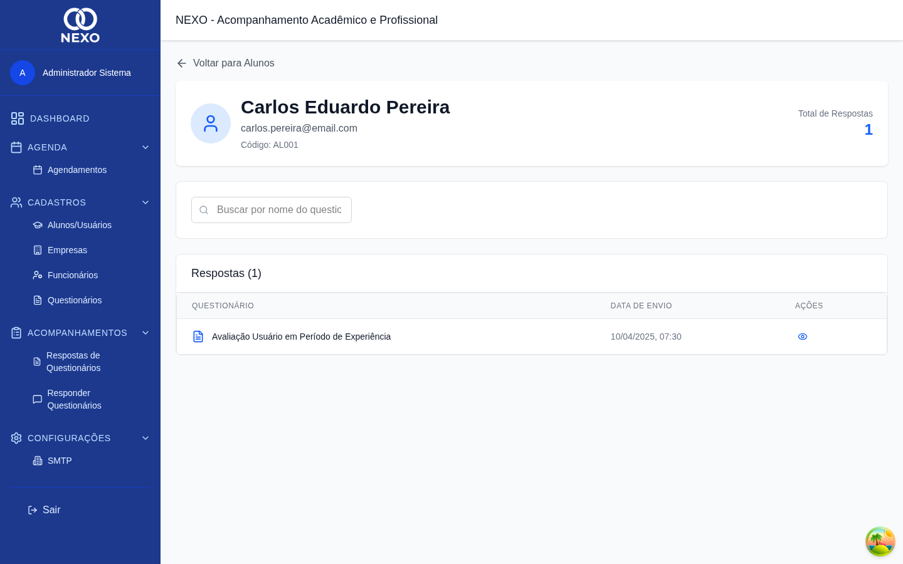

Ver respostas
Consulte as respostas dos questionários agrupadas por questionário ou por aluno.
| Ação | ADM | RH | COORD | PROF | DIR |
|---|---|---|---|---|---|
| Visualizar respostas | ✓ | ✓ | ✓ | ✓ | ✓ |
1. Visão por questionário
No menu, abra Acompanhamentos → Respostas de Questionários. Selecione um questionário no campo do topo para ver todas as respostas recebidas.

Estatísticas
Logo abaixo do seletor aparecem os indicadores de total de respostas, respostas recentes e taxa de conclusão do questionário selecionado. Use o ícone de seta ao lado do título para expandir mais detalhes.
Lista de respostas
A tabela mostra o aluno, a data/hora do envio e o status. Use a busca para filtrar por nome ou e-mail.

Ver uma resposta detalhada
Clique no ícone de olho em qualquer linha para abrir a resposta completa em uma janela.

2. Visão por aluno
Na lista de alunos, abra a página de respostas do aluno clicando em "Respostas do aluno". Lá você vê o histórico de todos os questionários que esse aluno respondeu.

Para extrair todas as respostas em PDF, use o botão de relatório no topo da página (veja Relatórios).